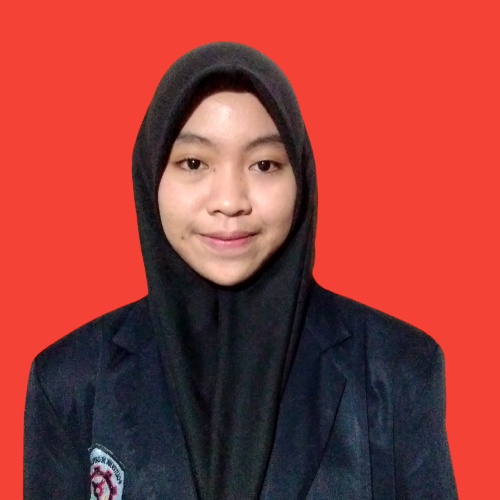

Data Pengunjung
Halaman Portofolio

Perkenalkan nama saya Ayu Istikomah, saat ini saya berdomisili di Banyuwangi Kota. dengan jurusan Teknik Informatika prodi Teknologi Rekayasa Perangkat Lunak. Alasan saya memilih Teknik Informatika di Politeknik Negeri Banyuwangi
yaitu saya ingin melatih kepekaan diri saya terhadap perkembangan teknologi yang lajunya semakin pesat. Saya memiiki beberapa pengamalaman berorganisasi dan pelatihan yang saya ikuti selama saya berkuliah. Saat ini juga saya masih
mengikuti Program Studi Independent Bersama SEAL di Kampus Merdeka dalam bidang UI/UX.